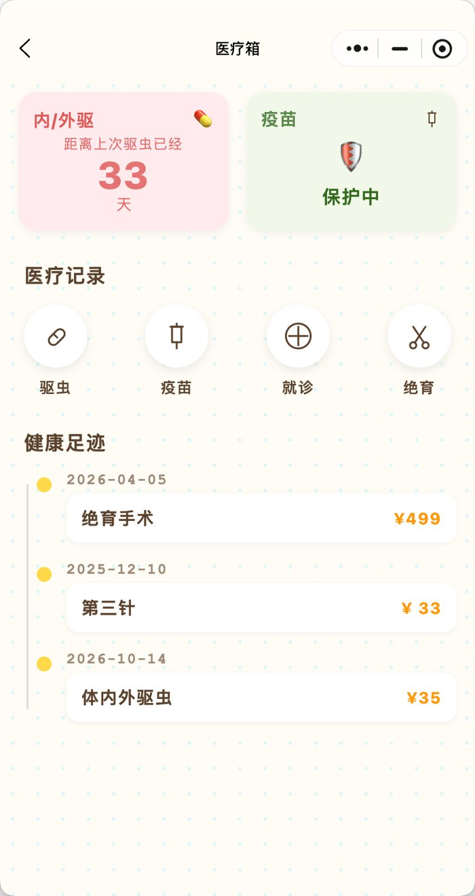
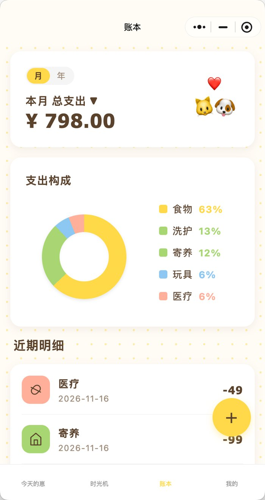
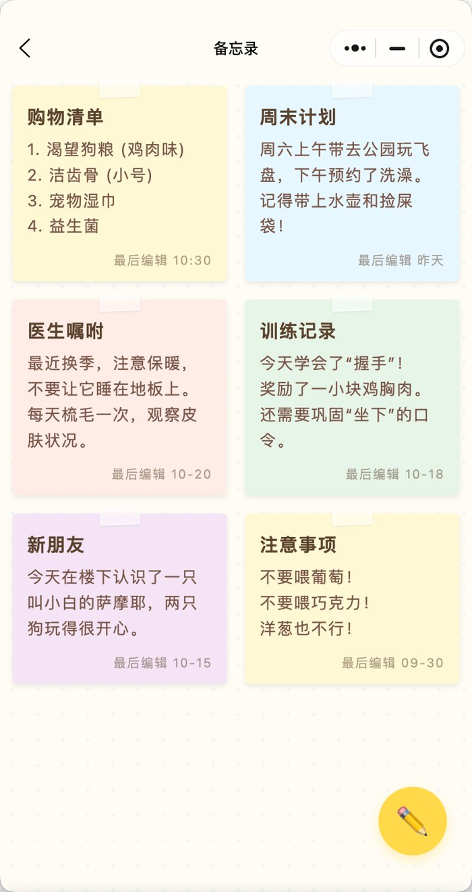

宠宠日记本 · 微信小程序
给养宠物的人用的记录工具。痛点：驱虫、疫苗、体重、花销散在备忘录和聊天记录里，到时间想不起来。做成一个小程序：首页记今天，医疗箱算距离上次驱虫多少天，体重画成长曲线，账本分类统计，时光机按日历回看照片和记录。从需求、UI 到代码全部用 Trae AI 做，没写一行手写代码。从 0 到 1 做出来的过程视频 ↗
怎么实现
设计师用 AI 独立做一个上线产品
Before会设计，不会写代码，小程序做不出来After把需求和界面说清楚，AI 写代码，自己改到上线
01需求与界面👤 人工
- 定功能：日记、医疗箱、体重、备忘录、时光机、账本；定风格：暖色、圆角、贴纸感
02生成与调整🤖 AI + 👤
- Trae AI 生成页面和逻辑，一页一页看效果、改细节，错了让它重写
03上线👤 人工
- 微信小程序审核、发布，自己每天在用
长什么样





